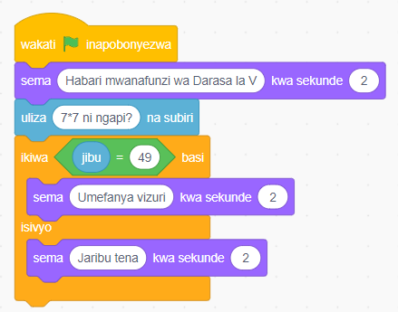

Kazi ya kufanya namba 9
Unda mchezo wa namba unaotumika kujifunza mpangilio wa namba kwa njia ya kufurahisha kupitia michezo ya hesabu na mafumbo.
Bofya bloku la Matukio kisha chagua bloku la wakati bendera ya kijani inapobonyezwa.
Bofya bloku la Muonekano kisha chagua bloku la sema ( ) kwa sekunde ( ).
Bofya bloku la Hisi kisha chagua bloku la uliza ( ) na subiri.
Bofya bloku la Kidhibiti kisha chagua bloku la ikiwa ( ) basi ( ) isivyo. Ongeza taarifa ya sharti kama inavyoonyeshwa kwenye Kielelezo namba 12.
Bofya bloku la Muonekano kisha chagua sema ( ) kwa sekunde ( ). Ongeza ujumbe unaofaa kama inavyooneshwa kwenye Kielelezo namba 12.
Kielelezo namba kumi na mbili kinaonyesha mchezo wa namba unaomsalimu mwanafunzi wa Darasa la Tano, kumuuliza swali la hesabu, na kumpa mrejesho kulingana na jibu lake.

Kumbuka: Unaweza kuongeza maswali zaidi kwa kuzalisha nakala za bloku.